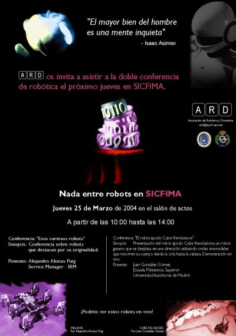
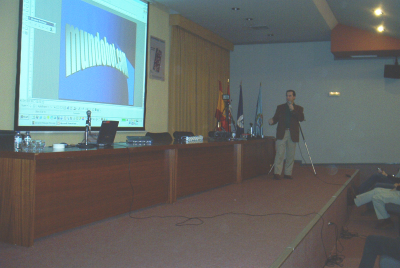
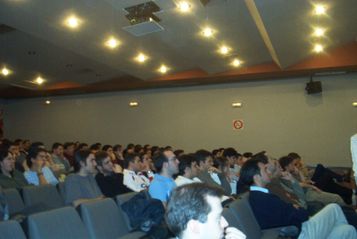
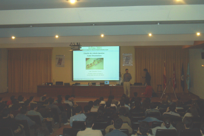
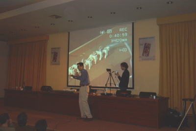

|
”El robot ápodo Cube Revolutions”. SICFIMA. Facultad de Informática. UPM. Marzo 2004. |
|
 |
Título: “El Robot ápoco Cube Revolutions”
Duración: 45 minutos
Evento: IX semana de la investigación y la cultura de la Facultad de Informática de Madrid. SICFIMA
Organiza: Asociación de Robótica y Domótica (ARD). Facultad de informática. UPM
Lugar: Facultad de Informática. UPM.
Fecha: 25 de Marzo de 2004
Ponente:
En el campo de la robótica móvil existen robots que no utilizan ni ruedas ni orugas ni patas para desplazarse. Dentro de este grupo se encuentran los robots ápodos. Por otro lado, en 1994 Mark Yim propuso un nuevo enfoque en la construcción de robots móviles: la robótica modular reconfigurable. El robot Cube Revolutions, descrito en esta presentación, es un ápodo desarrollado bajo la perspectiva de la robótica modular reconfigurable. Está compuesto por la unión en cadena de 8 módulos iguales (Módulos Y1). Se desplaza en línea recta, mediante ondas que recorren su cuerpo desde la cola hasta la cabeza. El robot calcula las posiciones de las articulaciones a partir de los parámetros de la onda: forma, amplitud y longitud de onda. Para la electrónica se han usado diferentes enfoques. En esta presentación se muestra la más sencilla: control mediante un microcontrolador de 8 bits conectado a un PC por medio de un cable serie. Cube Revolutions es un robot para la investigación, que está en desarrollo. Se muestran los algoritmos empleados para la locomoción y los que se van a emplear en un futuro: algoritmos genéticos que permitan determinar las secuencias óptimas de movimiento.
La charla completa fue grabada en mp3. Está accesible desde la web de sicfima 2004. El fichero completo se puede descargar de aquí (35 MB)
|
Descargas |
|
sicfima-04-cube-revolutions.sxi (2,8 MB) |
Presentación para OpenOffice 1.1.3 |
|
Presentación en PDF |
|
|
sicfima.jpg (125KB) |
Cartel de las jornadas de Robótica de Sicfima. Resolución 840x1200 |
|
Charla en mp3 (35MB) |
La charla completa, disponible en la web de sicfima 2004 |
Se condecen permisos para usar, modificar y/o distribuir esta presentación, siempre que se mantenga esta nota.
Robot Cube Revolutions.
Robot ápodo Cube Reloaded (Versión anterior a Cube Revolutions)
Aplicación libre QCAD, para diseño en 2D. Disponible en Debian (apt-get install qcad)
Aplicación libre Blender, para diseño en 3D. Disponible en Debian (apt-get install blender)
Librerías gráficas GTK
A principios de Marzo, Alejandro Alonso se puso en contacto conmigo para ver si quería participar en el evento. Él ya había estado dando una conferencia sobre la primera versión de Melanie el año anterior y ahora iba a dar una sobre “esos curiosos robots” y aprovechar para presentar la nueva versión de Melanie, con una estructura de patas muy mejorada.
Aquí se pueden ver unas fotos de la charla de Alejandro.
|
 |
 |
Yo acepté encantado. Acababa de construir a Cube Revolutions y fue el primer evento donde lo presenté. La versión anterior era Cube Reloaded, que tenía sólo 4 módulos.
Me lo pasé muy bien. Volví a retomar el contacto con Javier de Lope, que hacía mucho tiempo que no nos veíamos, y por cierto, nos invitó a comer a Alejandro y a mí. Gracias Javi ;-)
|
 |
 |
A Marco Ferreira y Lucas Ros, de la Asociación de Robótica y Domótica de la Facultad de Informática por la organización de las jornadas de robótica en Sicfima y por invitarme a ellas. ¡Muchas gracias!.
Alejandro Alonso por contar conmigo para estas charlas. ¡Muchas gracias!
1/Enero/2006: Añadido enlace a la página de Cube Revolutions.
24/Mayo/2005: Publicada información en esta web. Con mucho retraso, lo sé ;-)
{kind=link}